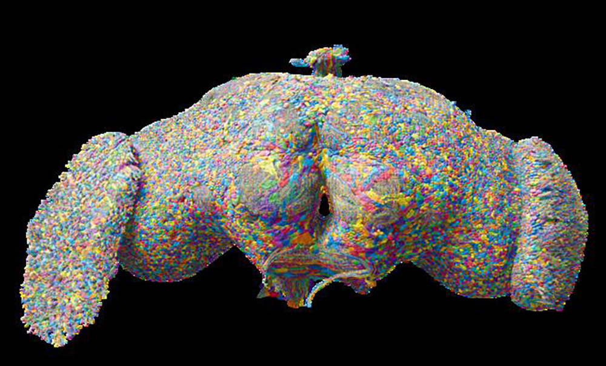
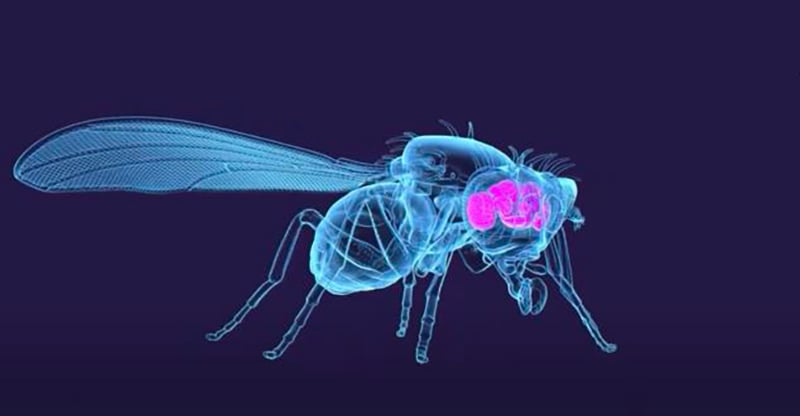
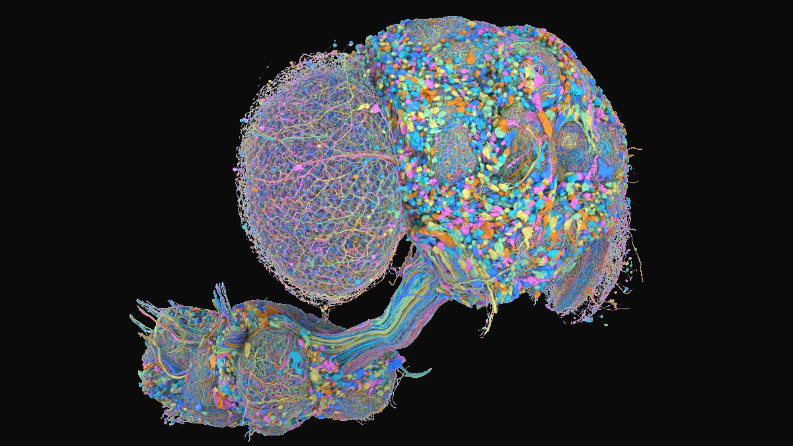
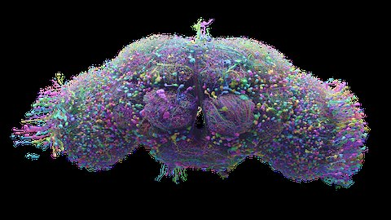

1
Eyes
A virtual object approaches. Its growth on the retina is converted into spikes in the fly's own looming-detector neurons, LPLC2 and LC4, on the side of the eye that sees it.
Live replay · the real fly connectome seeing an object rush toward it
We took the complete wiring diagram of a fruit fly's brain, ran it as a spiking neural network, connected its eyes to a virtual camera and its command neurons to a quadcopter. Nobody trained it. When a virtual object flew at the drone, the fly's own wiring steered it out of the way.
In 2024 the FlyWire consortium finished something no one had done for an animal with a real brain: they traced every neuron and every synapse in an adult fruit fly, from electron-microscope images sliced 40 nanometres thin.
A second team then turned that wiring diagram into a working simulation. Each neuron is a tiny "leaky integrate-and-fire" unit: it collects charge from its inputs, leaks a little, and fires when it crosses a threshold. The rules are simple and identical for every cell. The only thing that makes one fly brain different from a random network of the same size is which neuron is wired to which.
That raised a question we could actually test. A fruit fly avoids collisions and holds a steady heading using visual circuits that neuroscientists have studied for decades. If the wiring diagram really captures those circuits, then feeding a simulated threat into the fly's looming detectors should produce a steering signal in its command neurons, on the correct side, with no learning at all. We gave that signal to a quadcopter and watched.


A virtual object approaches. Its growth on the retina is converted into spikes in the fly's own looming-detector neurons, LPLC2 and LC4, on the side of the eye that sees it.
The full FlyWire connectome runs untouched: 139 thousand neurons, 54 million synapses, every connection at its measured strength and sign. Whatever it does with the input, it does on its own.
Descending neurons carry commands from brain to body. We read the ones flies use to steer and escape, and map them to roll, yaw and thrust setpoints on a simulated drone.
Three parts run in lockstep, twenty milliseconds at a time. The parts marked real come straight from the fly. The parts marked engineered are ours, and we say exactly what they do.
Geometry, not pixels. The object's angular size and expansion rate drive LPLC2 and LC4 in proportion, weighted toward the eye that sees it. Self-rotation drives the T4 and T5 motion detectors by direction. No neuron gets a signal it could not get in life.
The Shiu et al. (2024) leaky integrate-and-fire model on FlyWire release 783. One synaptic weight for the whole brain, scaled by synapse count; excitatory or inhibitory by predicted neurotransmitter. We changed nothing.
Steering neurons DNa02, DNa01 and DNb01 push the drone toward their own side; wing-amplitude neurons DNg02 and saccade neurons DNp03 / DNp11 push it away. The giant fiber triggers a climb. Signs come from fly physiology; only the gains are ours.
Every dot is one real neuron at its measured position, viewed from the front. The two large lobes are the optic lobes behind each eye. Toggle the cell types the experiment touches.
Before flying anything we asked the simplest question. Stimulate the looming detectors on one side only, and record every descending neuron. If the connectome carries a real steering circuit, the response should be lopsided, and lopsided in the direction a fly would turn.
It was. A threat on the left lit up the steering neurons DNa02, DNa01 and DNb01 only on the right, and the saccade neurons DNp03 and DNp11 only on the left. In a fly, both patterns mean the same thing: turn right, away from the threat. The giant fiber fired on both sides, as expected for an escape reflex.
Baseline activity, with no input at all, was exactly zero spikes. Everything shown here is caused by the stimulus.
A 30 cm sphere flies straight at the hovering drone at 2 m/s from the left, the right, or dead ahead. With no brain the drone just hovers and gets hit. With the fly brain it banks away every time. Press play, or drag the slider.
Within one 20 ms tick of the object starting to loom, the right-side steering neurons and the giant fiber were firing. The bridge turned that into a 20° bank and a yaw away from the threat. About 70° into the turn the object left the field of view, the brain went silent, and the drone coasted to a stop. It never learned where the object was; it only ever reacted to its growth on the retina.
Head-on threats are a tie-breaker problem for any symmetric system. This brain broke the tie to the right every time, because one saccade neuron, DNp03, only fires on the left in the current model. That is a quirk of the dataset, and it is visible in the data rather than hidden by tuning.
Flies stabilise their flight with the optomotor reflex: when the whole world slides across the eye, they turn with it to cancel the slip. We spun the hovering drone with a one-second yaw torque and let the fly's motion detectors see the resulting optic flow. Same brain, same read-out, no changes.
The fair test is a brain that is identical in every way except the one thing FlyWire measured: who connects to whom.
We kept all 138,639 neurons, every neuron's transmitter sign, every synapse and its strength, and re-pointed each connection at a random target, which leaves every neuron with the same number of inputs and outputs. Then we ran the exact same flights. The shuffled brains were just as active as the real one, often more so. They simply did not steer. In this first pass with two shuffled brains, three of four looming runs ended in a collision, the fourth turned by chance, and neither corrected the yaw disturbance.
The stress test further down repeats this at scale: three shuffled brains and sixty flights gave fifty collisions, and the ten that cleared all came from one shuffle that only ever turned one way, whichever side the threat came from. A second control there, the real brain read out through randomly chosen command neurons, behaved the same way.
In the first experiments we told the brain "something is looming" by stimulating its looming-detector neurons directly. That is a fair test of the steering circuit, but not of the detector. So we stopped. Instead we stimulated only the fly's elementary motion detectors, T4 and T5, which come in four flavours tuned to front-to-back, back-to-front, upward and downward motion.
An object rushing at you expands in every direction at once. A world sliding past because you are turning moves in one direction. We gave the left eye each pattern and watched what the wiring did with it.
Only the all-directions pattern woke the looming detector LPLC2 and the giant fiber. Single-direction motion left both silent and instead drove the steering neuron DNa02 hard on the same side. Nobody wrote a looming detector. The connectome contains one, and it contains a separate channel for "I am rotating", fed by the same motion cells. Both brains do this.
FlyWire is one female fly. In June 2026 a second team published MaleCNS: a complete male fly, brain and nerve cord, reconstructed independently. We ran the same simulation on it. If the reflex is real biology and not a quirk of one specimen, it should be there too. Spin the brains, then read the numbers.

Open-loop rates are means of 4 one-second trials at 100 Hz drive. Flights: 5 per bearing, 3 for yaw. ✕ marks a collision. "Away from threat" is the share of flights that turned to the correct side.
Replicated. Looming input fires the giant fiber on the matching side. LC4 input fires the saccade neuron DNp11 on the matching side only. Motion in all directions builds a looming response out of T4 and T5 on its own. Baseline is silent. In closed loop, the male brain with the descending-neuron read-out evaded every threat to the correct side and held its heading against the yaw disturbance, and shuffling its wiring destroyed both.
New, because the nerve cord is included. The escape now runs end to end: looming in the eye drives the wing power motor neurons and the jump-muscle motor neuron, which is the fly's take-off reflex, with no read-out in between.
Did not replicate. In the male dataset the steering neuron DNa02 responds on the same side as the threat, not the opposite side as in FlyWire, and the wing steering motor neurons lean left whichever eye is stimulated. Reading the drone's turn from those motor neurons still cleared the sphere, but turned to the right every time, and it failed the heading test outright. So on MaleCNS the escape pathway is solid from eye to muscle, while the fine steering read-out is not. Whether that is biology, a proofreading asymmetry, or our one-size-fits-all neuron model is exactly the kind of question the comparison exists to raise.
Four trials is a demo. So we flew it a few hundred more times, against three kinds of control, with parts removed, across bearings, speeds and sizes, and while cruising past things that were never a threat.
The plan for putting this brain on a palm-sized quadcopter, with a gate at each step. Nothing flies until the gate before it passes.
Replace the analytic retina with the fly's own visual system model (flyvis, Lappalainen et al. 2024), which turns real video into T4 and T5 activity. Gate: the looming and rotation responses above reproduce from pixels alone, and the overcaution seen while cruising is measured and bounded.
The full brain runs about six times slower than real time on a desktop CPU. Prune to the eye-to-command subgraph or move to the GPU. Gate: one 20 ms tick in under 20 ms, ten thousand ticks in a row.
A 65 mm whoop running Betaflight in angle mode, which is the autopilot used here. Its analog camera streams to the PC; the PC sends roll, yaw and thrust setpoints at 50 Hz through an ELRS transmitter. Flights inside a net, on a light tether, with a physical disarm switch. Gate: hover, then a hand-swung ball.
Twenty swings per condition from left, right and centre, with no-brain and shuffled-brain controls, predictions committed before the first flight, and an overhead camera measuring closest approach the same way the simulation does.
A wiring diagram is not a brain, and a quadcopter is not a fly. But the result says something specific: the FlyWire connectome, run with the crudest possible neuron model, contains a working visual steering reflex that is correct in sign, lateralised, fast, and useless when scrambled.
Every neuron here is the same leaky integrator with one global synaptic weight. No ion channels, no gap junctions, no neuromodulators, no learning. Steering still came out of the wiring alone, which suggests the circuit logic is written mostly in the connectivity.
We fixed the read-out signs from published physiology before the first flight. The wiring produced right-side steering activity for left-side threats, which is exactly the pattern that turns a real fly away. That is a prediction the connectome made, not a result we fitted.
The same eight command neurons and the same gains handled both escape from a looming object and stabilisation against rotation. In flies those are considered separate circuits; here they converged on the same descending neurons in a way that happened to be consistent.
Because nothing is trained, every discrepancy is informative. The silent right DNp03, the DNp03 response to LC4 but not LPLC2, and the differing giant-fiber transmitter predictions on the two sides are all concrete things a biologist could check in the animal.
Fed only motion-detector activity, the connectome built its own looming response and kept it separate from rotation. That is the radial-motion selectivity Klapoetke and colleagues measured in LPLC2 in 2017, reproduced here from connectivity alone, in two different flies.
Shuffled wiring, random read-outs and removed steering neurons all break it in predictable ways, and cruising past harmless objects makes it flinch. Those are the failure modes of a hard-wired escape circuit, which is what the fly literature says this is.
| Item | Value |
|---|---|
| Connectome release | FlyWire v783 |
| Neurons in model | 138,639 |
| Directed connections | 15.09M |
| Synapses | 54.5M |
| Neuron model | LIF, vth −45 mV, τm 20 ms |
| Synaptic weight | 0.275 mV × synapse count |
| Simulation step | 0.1 ms (Brian2, Cython) |
| Control tick | 20 ms |
| Wall time per tick | 0.116 s (≈6× real time) |
| Wall time per 3.5 s flight | ≈20 s |
| Drone | 0.5 kg, 6-DOF, 1 ms physics |
| Bridge smoothing | EMA τ = 60 ms |
| Bank / yaw limits | 20°, 120°/s |
| Hardware | i7-12700F, WSL2, 24 GB |
| MaleCNS neurons / connections | 165,122 / 15.27M (≥2 synapses) |
| MaleCNS wall time per flight | ≈45 s |
| Total flights simulated | — |
The people who built these datasets explain them far better than we can. Start here.

Videos play from YouTube when you press play; nothing loads until then. Images on this page from FlyWire, Janelia and NIH are credited in their captions; the two Janelia renders were placed on a dark background for this page and are otherwise unaltered.
The female brain: 138,639 neurons, 15.1 M connections, 54.5 M synapses. Positions, types and sides from the Schlegel et al. annotations.
The male brain plus nerve cord: 165,122 traced neurons, 15.3 M connections at two synapses or more, wing motor neurons included.
One leaky integrate-and-fire rule for every neuron, one synaptic weight scaled by synapse count, signs from predicted transmitters. Unchanged here.
Conventions: "left" and "right" are the fly's own sides as labelled in the annotation dataset. Firing rates are means over trials of spikes per second per neuron. All simulations, code and logs are in the project repository.